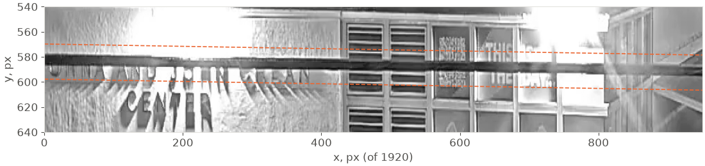
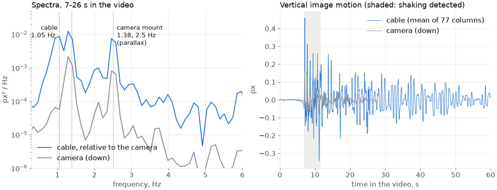
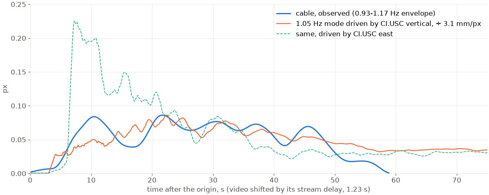
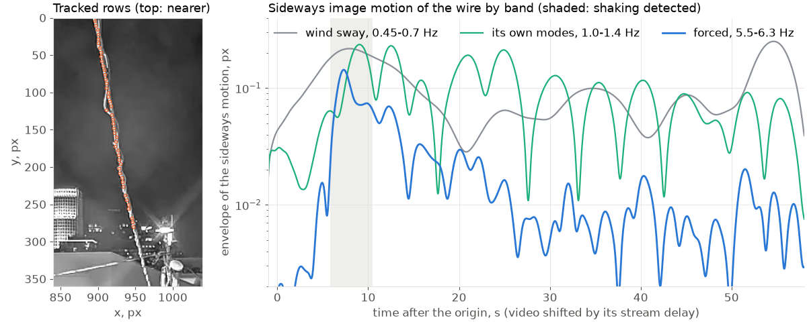
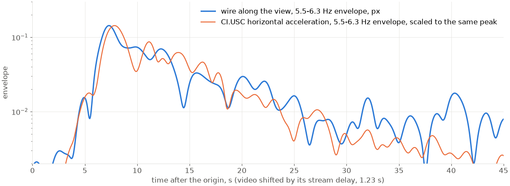

A cable as a seismometer
2026-11-20 11:25:35 UTC, Mw 3.94, 1 km NW of Commerce, CA. Camera 0003 (Skid Row, downtown Los Angeles, 8 km from the epicenter) and station CI.USC, 4.6 km away. Draft note, 2026-11-24; follows Camera mount model: Mount Wilson.
Draft research note. A camera's own vibration is the ground motion filtered by an unknown mount. An object in the scene with a known, lightly damped mode is different: its motion relative to the camera does not depend on the mount, and its response to the ground follows from its physics. We test this with a cable across the view of the Skid Row camera and a wire along it. Two objects, one small event; not reviewed.
In short
- The cable has a mode of its own at 1.050 Hz, damped by about 0.2 % (Q ≈ 200). It rang for about a minute after the shaking, at 0.08 px (0.0075 px before). At this frequency its motion is 96 times the camera's in power and nearly incoherent with it.
- Its other peaks, 1.38 and 2.5 Hz, are the camera's mount (coherence with the camera 0.93-0.97). The cable is a few meters from the camera, so the sway of the mount shifts it in the image much more than the distant background: parallax.
- Driven by the ground motion of CI.USC, a 1.05 Hz oscillator with the same damping rings like the cable. Its envelope peaks at 22.4 s after the origin (the late 1 Hz waves of the basin), the cable's at 21.7 s, with a log-envelope correlation of 0.60 for the vertical component. The amplitudes match at 3.1 mm per pixel, which makes the 9-px-wide cable 27 mm thick: a normal power or telecom cable.
- So the cable measures the Fourier amplitude of the ground acceleration at 1.05 Hz, to within a factor of about 2, through its physics and its distance, not through the camera's mount. The mount (2.5 Hz) barely sees this frequency.
- A second wire, running along the view, records the shape of the 6 Hz horizontal shaking. Its sideways motion at 5.5-6.3 Hz rose 33 times above its level before the event and does not ring: its envelope follows that of CI.USC's horizontal acceleration in the same band (log-envelope correlation 0.88, peaks at 7.3 and 7.8 s after the origin) down to its noise at about 30 s. Its amplitude is not calibrated. Below 1 Hz it sways in the wind.
The cable
A dark cable crosses the whole 1920 × 1080 night view at about y = 585 px. We tracked its vertical position in 77 columns (every 16 px, skipping the pole and the signal box in the middle) by the sub-pixel cross-correlation of the vertical intensity profiles (32 px across the cable) with their mean over the first 5 s, and subtracted the camera's motion down (eqcam's robust fit of the background). The whole video was used at full resolution, 30 fps, 0-60 s.

| Vertical image motion, rms | Before (1-6.5 s) | Shaking (6.9-12 s) | After (12-26 s) |
|---|---|---|---|
| Cable, relative to the camera (median of the columns) | 0.007 px | 0.151 px | 0.087 px |
| Camera (down) | 0.002 px | 0.044 px | 0.019 px |
Its own mode, and the camera's
The coherence between the cable's motion and the camera's tells which of its peaks belong to it:
| Frequency | Cable / camera power | Coherence | Whose |
|---|---|---|---|
| 1.05 Hz | 96 | 0.22 | the cable's own mode |
| 1.3-1.4 Hz | 5.5 | 0.93 | the camera's mount (eqcam's dominant 1.38 Hz) |
| 2.5 Hz | 9.3 | 0.97 | the camera's mount (its resonance, 2.5 Hz) |
At the mount's frequencies the cable moves with the camera but more than it: the camera's rotation is removed with the background, but its translation u shifts a near object by f_px·u/Z and the distant background by almost nothing. A near object of known distance could therefore measure the translation of the camera too.
The cable's own mode: 1.050 Hz (with weaker peaks at 1.00 and 1.11 Hz: a sagging cable has closely spaced modes), moving roughly in phase across the frame (the fundamental), 0.035-0.07 px from left to right. Its envelope decays from 0.08 px at 12-23 s to 0.018 px at 55 s: an e-folding time of 67 s, a damping of 0.23 % of critical. A taut cable's fundamental is f1 ≈ 0.55/√(sag in m) Hz, which puts its sag near 0.3 m.

The cable as a seismometer
For a mode of frequency ω driven through its supports by the ground acceleration a(t), the relative displacement at mid-span after the shaking rings at
x = Γ · |A(ω)| / ω, A(ω) = ∫ a(t) e−iωt dt, Γ = 4/π for the fundamental of a string
(undamped; with 0.2 % damping it decays slowly and integrates the input near ω over about a minute). The cable's ringing amplitude is therefore the Fourier amplitude of the ground acceleration at its frequency, times a known factor.
The closest stations (CE.24977, 270 m away; Community Seismic Network stations within 1-2 km) are not served by the SCEDC or EarthScope web services; CI.USC, 4.6 km away in the same basin, is. Its Fourier amplitudes at 1.05 Hz were 0.148 (vertical), 0.120 (north) and 0.184 (east) cm/s, giving Γ|A|/ω = 0.29, 0.23 and 0.35 mm. We drove a 1.05 Hz oscillator with 0.23 % damping with each component and compared its envelope with the cable's:
| CI.USC component | Envelope peak, after the origin | Log-envelope correlation | Scale that matches |
|---|---|---|---|
| Vertical | 22.4 s (cable: 21.7 s) | 0.60 | 3.1 mm/px |
| East | 7.3 s | 0.46 | 3.2 mm/px |
| North | 8.0 s | 0.19 | 2.8 mm/px |

The vertical component matches best, as expected for the vertical motion of a horizontal cable, and in timing as well as in level: the late peak at 22 s comes from 1 Hz waves that arrive after the S wave in the basin. The scale is a check on the physics: 3.1 mm per pixel makes the cable, 9 px wide in the image, 27 mm thick, a normal size for a power or telecom cable; with a focal length of 1000-1400 px, it is 3-4 m from the camera.
A second wire, along the view
A bright, twisted service drop hangs from the top of the frame, close to the camera, down to a pole farther away (Figure 4, left). It runs nearly along the line of sight, so its sag is foreshortened and the camera sees its sideways sway. We tracked its horizontal position in 45 rows (every 6 px, y = 4-280; three rows below them tracked a street lamp and were dropped), as for the cable, and subtracted the camera's motion across.
| Sideways image motion, rms | Before (1-6.5 s) | Shaking (6.9-12 s) | After (12-26 s) | After (26-60 s) |
|---|---|---|---|---|
| Near part (y < 120 px, 20 rows) | 0.074 px | 0.380 px | 0.230 px | 0.154 px |
| Far part (y > 180 px, 15 rows) | 0.058 px | 0.246 px | 0.150 px | 0.111 px |
Unlike the cable, this wire was already moving before the event: the wind swayed it at 0.46-0.62 Hz. Its motion splits into three bands (envelopes of the mean of the rows):
| Band | Before | Maximum (after the origin) | 12-25 s | 40-55 s | What it is |
|---|---|---|---|---|---|
| 0.45-0.7 Hz | 0.091 px | 0.22 px at 7.9 s | 0.084 px | 0.081 px | wind sway: a gust rising from before the shaking, and as large (0.25 px) at 55 s |
| 1.0-1.4 Hz | 0.027 px | 0.24 px at 9.0 s | 0.12 px | 0.065 px | its own modes (1.11, 1.29 and 1.35 Hz after the shaking), excited and ringing, also kept up by the wind |
| 5.5-6.3 Hz | 0.004 px | 0.14 px at 7.3 s | 0.029 px | 0.008 px | forced by the shaking, without ringing |

At the frequencies of the camera's mount the wire again moves with the camera (coherence 0.82-0.87 at 2.5 Hz, more at its near end): parallax, as for the cable. At 1.1-1.35 Hz and 6 Hz it does not (coherence 0.13-0.27), and the camera hardly moves at 6 Hz (the wire's power there is 104-105 times the camera's).
The 6 Hz envelope follows the ground. Compared with the envelopes of CI.USC's acceleration in the same band, with the video shifted by the same stream delay as for the cable:
| CI.USC, 5.5-6.3 Hz | Envelope peak, after the origin | Log-envelope correlation at the stream delay | Best, with a further shift |
|---|---|---|---|
| Horizontal | 7.8 s (wire: 7.3 s) | 0.88 | 0.88 (+0.15 s) |
| Vertical | 14.0 s | 0.69 | 0.73 (−2.15 s) |

The horizontal component matches, as expected for the sideways motion of a wire along the view, and well enough to see the P wave. The cable's motion in the same band follows the station less well (0.60 for the horizontal, 0.53 for the vertical). Why the wire does not ring at 6 Hz, as it does at 1.1-1.35 Hz, we have not modeled: its high modes are closely spaced, and the damping of a twisted cable, from the friction between its strands, may grow with frequency; it then follows the motion of its supports instead of storing it. The stream delay (1.23 s) came from the camera's own S pick, so the alignment is not independent, but no further shift beyond 0.15 s is needed.
Caveats
- The station is 4.6 km away; at 1 Hz in the basin the ground motion can differ by a factor of 2 over that distance. The 270 m station would make this a real test.
- The model is a string driven uniformly through rigid supports. A sagging cable is also driven by the motion of its supports along its span, its supports (poles, a building) may amplify, and it has closely spaced modes. The cable decays faster than the model after about 45 s: its damping is probably somewhat above 0.23 %.
- The distance of the cable is inferred (from the fit and an assumed diameter), not surveyed; the cable is near and probably out of focus, which widens it in the image.
- The wire along the view has no scale: its distance changes along it, and its gain at 6 Hz depends on how its supports (a pole, the building) shake and on its tension, none of which is known. Its low modes are driven by the wind as well as by the ground; in a small event they cannot be separated.
- Two objects, one event.
What it means
- An object in the scene with a known, lightly damped mode is a narrowband seismometer: its gain comes from its physics (frequency, damping, participation factor) and its distance, not from the camera's mount. Its motion is measured relative to the camera, so the mount cancels, except for the parallax of near objects, which coherence with the camera identifies.
- A wire can also follow the shaking at high frequency, where it does not ring. The wire along the view gives the shape of the horizontal shaking at 6 Hz over time, above the corner frequency of an M4, but not its level. Calibrating it once, against a station nearby or across repeated events, would make it a measurement.
- Cables, wires and hanging signs are common in street views. With their distances surveyed once, two or three of them at different frequencies would give the ground's spectrum at a few points; the camera's own vibration cannot. The two wires here are complementary: the cable gives the level at 1.05 Hz, the wire along the view the time history at 6 Hz.
- Wind sets the floor at low frequencies: a wire whose low modes the wind moves is usable there only in larger events.
- Next: the record of the 270 m station, other cables in the same and other views, and line tracking in eqcam (the objects it finds are patches, which a thin cable does not fill).
Station data: Southern California Earthquake Data Center (SCEDC), CI.USC broadband; location: USGS ComCat (ci41364111). Camera motion: from a public camera stream. See also Camera motion vs seismic stations. About, sources and removal requests